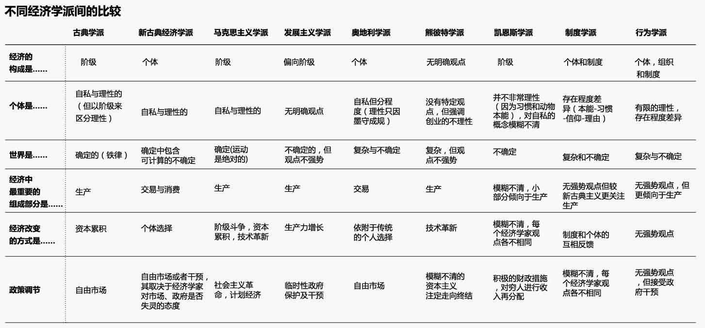

..一些金融经济知识
税收改革¶
黄宗羲定理¶
现代学者秦晖在他的论文《并税式改革与“黄宗羲定律”》中总结出的定律。
历代税赋改革，每改革一次，税就加重一次；农民种粮食却要等生产的产品卖了之后用货币交税，中间受商人的层层剥削；不管土地好坏都统一征税。2003年3月6日，温家宝总理在全国人大会议期间，参加湖北省人大代表讨论时说：“历史上每次税费改革，农民负担在下降一段时间后都会涨到一个比改革前更高的水平，走进 ‘黄宗羲定律’怪圈。”并郑重表示“共产党人一定能够走出‘黄宗羲定律’怪圈。”
不同经济学分支的对比¶
离岸人民币(CNH)/在岸人民币(CNY)¶
在岸、离岸人民币的那些事儿, 转自腾讯财经
空军司令谢国忠2016(?)年的讲话¶
大家最近都看到了一些波动。金融危机到现在已经6面了，大家现在还在谈经济是不是恢复了。说明现在还有很大问题没有被解决。我觉得中国之外去看，大家基本上已经放弃了，这个世界进入了一个慢增长的状态，在美国，盼了6年，今年也就是2%的增长。以后要出现比这个更高的增长，可能性不是很大。现在欧洲在谈的是通缩的可能，欧洲的通缩是因为他南方的价格高，北方价格低，他调整的话，要么是南方价格下来，要么是北方价格上去。但是他北方不愿意价格下去，所以出现通缩可能性比较大。日本的话，有一段时间上升，但是现在也没了。今年世界经济是比较低迷的，就是2%左右的增长。这是外部的环境。而且外部环境要在近两年要改好也不容易 ，因为美国要加息了，美国通胀要来了。对中国来说，外部环境变好来救中国，可能性不是很大。08年政府救市有一个理论依据是说，我们搞刺激，将来世界经济好了，外部的需求可以接上来。结果这是一个错误的想法。
世界大环境变的，中国内部有问题不能靠外部来解决了。所以刺激的问题是一定要解决的。从去年开始，中国出现了一些鼓舞人心的信号。一个是三中全会的决定，以后资源分配要市场化，或有是反腐，反腐败也是非常重要的，可以减少我们的体制成本。为什么中国对房地产依赖那么大，是因为他的体制成本非常高，他要有钱去对冲这个成本，这样就把房地产泡沫搞的越来越大。现在反腐的话，体制成本会下降一些，对经济是有好处的。 三中全会之后，大家都比较乐观，但是泡沫不挤压的话，改革是很难推动的。我写了文章说，泡沫不灭，改革不起。现在我们还处于一个过渡的阶段。你听到经济有的时候好，有的时候坏，中国经济是一个超级牛人，他不可能这个月差下个月好，如果说你这样思考的话，一定是错的。超级牛人要转一个方向的话，一定要花很多时间的。
对我们来说，普通人是做生意的，或者是想要做点投资，或者是自己想要找一点就业的机会，你要看大的方向，如果是经济转向了，你要几年之后才可以有机会。我觉得中国转样开始，但是速度是非常慢的。 看中国经济要看三个力量。一个是过去的力量，一个是现在的力量，一个是未来的力量。
过去的力量是过度刺激遗留下来的问题。中国的房地产泡沫，有的时候大家聊天的时候对涨跌好象都有一些反映。但是对中国国家来说，房地产对中国的影响是非常深远的，历史一定会对这个问题非常严峻的评价。中国历史上有很多外来的战争，有货币乱发之类的，在中国经济形势好的时候，用了中国全球化带来的价值，搞了一个史无前例的大炮。使中国的货币空前增长。这给我们的政策限制是非常巨大的。因为中国经济当中，地方政府开支和房地产占了中国GDP的30%左右。这个问题处理的困难在哪里？最近我去了榆林，人为的刺激引起了煤炭价格大幅度的上升，榆林很多家庭自己出钱去搞煤矿。中国人第一次有钱他不知道怎么做，他就去放高利贷，放给谁呢？又是去搞投资的，搞房地产的，搞煤化工的，都是资本集中型的。房地产起来之后，他搞预售，然后又放大，杠杆一直在放大。搞房地产之后，繁荣又来了，因为房地产是投入，这个钱又转起来了，他是一个货币加速循环的概念。在泡沫起来的时候，速度上升的非常快。但是现在倒了，回头一想当时人的脑子都有问题。这个地方没有什么人，一个个城市怎么建起来的呢？现在问题出来之后，开始向下走的时候，他的房子预售了，现在人家要退钱，因为他觉得你预售的时候，五证不全，但部分预售都是程序不健全的。所以他也有一定的道理。地方政府觉得要闹事了，要开发商把钱退给人家。结果就会出现两个问题，一个是所有人都要退，第二开发商的钱从哪里来。开发商只有两个地方来钱，一个是银行一个是高利贷。地方政府去做银行的思想工作，高利贷也出面干预。这样就阻挡了市场处理泡沫的问题。中国很多地方的房地产都崩盘了，其实中国大部分城市的房地产都泡沫了。他没有销售的话，价格有什么意义呢？都是银行在撑着。背后是政府的力量不处理，然后就是金融，金融的钱从哪里来？就变成了货币政策，变成了定向降准，那就是银行有问题了，给他增加流通。这一次又搞了直接贷款给政府，搞了棚户区改造给地方政府很多钱。整个看起来他是用钱来托市。就等于是市场的力量不起作用。这是一个比较麻烦的事情。就是你对过去遗留下来的问题你不敢处理。这就形成了僵持，这和92年之后日本有点类似。公司其实已经破产了，大家天天上班也没事做，公司就像僵尸一样。
中国至少浪费了两年宝贵时间，去年就搞了一次，今年最近又搞了一次，是一个拖延。拖延当中，我们可能不了解政策目的，他可能有更高的政策目的，要买时间，有其他的因。我们可能无法理解。但是至少来讲，我们的改革还没有开始，有方向了，还没有超前走。所以这对大家来说，谈什么时候要投资还早了。关键是要把过去处理掉，不处理是不会有牛市的，你去全世界看都是把过去的问题暴露出来，然后才是牛市。
另外一个是现在的力量，就是保增长。美国搞量化政策，是因为危机之后出现了大量了失业，那是资源的浪费，他想通过QE把劳动力市场托起来，至少他有一个借口，是不是起作用，那是另外一回事，但是他至少有这个劳动力市场的原因。但是中国现在是劳动力短缺的经济，现在中国劳动力人口在萎缩，为什么还要搞保增长呢？如果说你保的增长是有效的增长我们还可以认可，如果说你仅仅是为了保增长。50年前说保增长是因为就业问题，我们要创造就业。现在没有这个基础了，你这个保增长的基本出发点是什么？我就看不到了。最近我看到一些题目，他是一种体制内的力量，中国政府这几年编制涨了十倍，他有很大的力量，他需要财政上进行支持。出去说保增长是为了体制内的平衡的话，对促进改革是有巨大的阻碍作用的。我们现在对保增长的问题，还没有产生新的认识。这是比较令人失望的事情。08年搞刺激的时候，我写了一篇文章，中国会搞刺激，但是会酿成大灾难，因为中国没有就业的问题，你这样去浪费钞票的话，印钞票搞GDP一定会有大的灾难。而且用货币保增长是不可持续的。现在我们的货币是121万亿，如果以15%的速度增长，每五年涨一倍，全世界又有多少的货币呢？很多人觉得中国人聪明，我们印了很多钞票，把钱给外国人，让他们持有。我觉得这是一个很天真的想法。全世界持有外币的只有华人，美金地位高是因为华人持有美金。欧洲人持有美金吗？日本人持有美金吗？其他的发展中国家持有美金，但是他们基本上都不存钱的，所以这也不重要。而中国是储蓄的一个民族，他持有美金。这是为什么美金在世界上地位高的原因。
人有的时候不要太聪明了，你觉得你可以骗别人，也会被别人骗的。经济不要太悬了，经济要踏踏实实的做有用的事情。中国最有用的就是世界工厂，但是在世界工厂旁边加了很多的概念，房地产、金融、理财，很多都是浪费。中国人的特点是吃苦耐劳，我们没有乔布斯，我们没有诺贝尔奖获得者。我们要看到我们的基础，我们国家的基础是吃苦耐劳，吃苦耐劳赚来的钱，怎么能随便的去砸掉呢？我们国家的思想还没有统一，中国老百姓吃苦耐劳，省吃俭用是我们的优势，我们国家的弱点是喜欢赌一把。朱镕基在98年的时候，干的是什么？当时贬值压力那么大？说中国工资这么低，说明我们的效益差，然后我们进入了WTO，变成了世界工厂，中国所有后来好的地方都是从这里来的。08年之后我们搞房地产，股市，中国经济好，房价就应该涨，好象是必然的。其实整个我们国家的治理变成了忽悠，动不动就出一个文件，又有优惠了，都是这么说的，大家没有搞明白，但是大家都这么说我们就进去了，他搞自我实践。中国人多，扎堆就行，就玩起来了，结果酿成了今天的大灾难。我们向前走很困难是因为我们对过去的认识，对国家的优点的发扬，对缺点的克服。
未来的力量是习书记说的新常态。中国经济要走向新常态要靠市场的力量，过去中国30多年是10%以上的增长，那是基数低的增长，增长分为资本、劳动力和效率三个部分。中国过去有劳动力过剩的问题，只要招商引资，外国人来中国开厂了，中国经济就上去了，因为原来没有利用起来，现在利用起来了，他就起来了。所以中国过去30的发展都是利用中国庞大的劳动力市场。另外一个是资本建立，原来没有资本建立，原来没有高速公路，现在有高速公路了，进入了高速公路网络之后，那就可以起到很大的经济效益。第三个就是效益，我们以前很多低效率的问题，利用市场竞争把效率提高了。中国10%的速度发展那么多年是和这三个力量有关的。
但是现在三个力量都受到了限制，第一劳动力人口在下降，没有劳动力的增加。第二是资本积累，中国的原始资本积累已经基本完成，现在我们的高速公路网络建完之后，你再建高铁，他的效率会高一些，但是并不是飞跃。你只是在原来基础上变得更好一些，他是一个渐进的过程，并不是跳跃的过程。从没有到有和有了之后变得更快，是两个不同的概念。第三就是效率，中国的效率，因为中国过去是投资工业化，任何世界上的国家，都会走完这个过程，走问之后就要走服务和消费。服务行业效率增长就不像工业那么快。所以中国的服务行业扩大，必然不中国的效率放慢。中国要面临新常态这样一个限制，中国经济以后十年的增加应该是5%-6%，现在把7.5作为底线，但是这样的高增长有什么好处？股市为什么不涨，说明你的高增长当中有很多浪费，如果你用市场分配资源有效率的话，股市一定是会上的，如果说经济涨股市不涨那就是资本的浪费。如果说你5%-6%的增长，效率高的话，股市会涨的很快的。这一次美国危机之后，股市恢复之后已经高过了危机之前的高点了。现在中国的股市又在什么位置上呢？
在中国大家都崇拜权利，其实崇拜权利是一个泡沫，中国领导自己也搞不清楚，他要你相信权利，你自己有信心，然后你就去做了，他靠这个来做自我实践。在短缺经济的时候可以这样做，但是如果说多是过剩的话，对权利的崇拜是没有用的，他会引起更大的浪费，因为你已经是过剩了，如果说大家还是相信权利可以改变现状，继续去投资，产能过剩的行业继续扩大产能没有问题，领导会帮我解决，这是对我们经济带来巨大的灾难。
我觉得我们对中国的经济有三个经济，政治、金融和经济周期。政治周期中国已经过了低点了，开始向上走，但是路很长。朱镕基是收，提高效率，后来是放，要和谐，大家都可以随便。我到一个二线城市的药监局，十年当中人涨了10倍。药监局的人干吗的？不就是到外面收钱的吗？中国政府要缩小，这是很重要的任务。政治周期在向上走。最终我们希望政治周期什么时候开始稳住了，就是我们公务员又开始下海了。中国这十几年大家都去做公务员，把中国的精英都吸收到政府里面做，这是巨大的悲剧。香港政府的人跟我说，他们提到香港和新加坡的区别，新加坡是精英治国，但是他的条件是人少，所以他高薪人少，谁腐败马上砍头。他的体制成本就很低，在经济区上主要依靠外国人，这样的话，他的体制是稳定的。而在香港不是精英。香港的高层的说，在大学里比较不好的人在政府里的，在大学里好的人都去企业了。这是两种模式，都可取。但是在中国，变成了精英治国，所有精英都到政府里面去，每个人都可以随便做事情，每个人都是老板。中国国家就像一个公司一样，中国的官员都把自己当股东随便拿，那这个企业能不完蛋吗？现在反腐败非常重要，反腐败代表了你企业有老板，不是股东可以随便拿钱的。最后，这里面的人觉得自己不是老板了，他觉得没意思了，他下岗了。这对经济是很有好处的。我觉得这个是一个政治周期要走的路还很长，这是一个时间的问题。在中国最重要的是领导人，领导人要以身作则，要可以感知到老百姓的疾苦，是不是掌控力很强。有了这个，中国经济早晚向上走的。所以我对中国长期是乐观的。
第二个周期是金融的周期，我们还没有开始，我们金融很有意思的。金融的话，每隔6个月都会有新的东西出来。一会儿是自由化，一会儿是沪港通。这20年不断的变化，但是有一点不变的就是国家控制信贷。信贷释放都是由国家来控制的。中国的金融市场化是比较虚的。其实利率市场化也是虚的，如果说借钱的人是国企，被借钱的人还是国企，那你还有什么用。一边借钱从来没有想过还，那你利率有什么用？甚至利率市场化会更加恶劣，因为他没有想过还钱，所以利率高一点无所谓。那做生意的人不是更完蛋了。所以金融改革一定是彻底改革，一步一步搞实验一定不成功。金融是整个流通的，你怎么可能从中抽出一小块来搞好呢？不太可能的。金融现在我们还没有开始搞改革，现在还是在拖延。不然的话，产生问题一定是非常严重的。我们的负债，从08年50万亿不到增长到120多万亿，这当中的70多万都是搞刺激的时候放出来的。这当中不良资产规模是巨大的，但是银行都说自己的不良资产只有1%，当然股市不相信，股市的股票比较低，说明股市对不良资产是担心的。我觉得金融周期还没有见底，金融周期见底的话，是开始处理不良资产。金融周期的见底是所有资产价格见底的必要条件。对个人理财来说，我说房价要跌，这是第二次说，第一次说是04年11月份的时候，我说马上就要跌，因为美国要加息了，结果05、06年跌了40%，07年开始起来是和全国货币起来的。但是这一次没有这个因素了。买房子和加油是不一样的，你一辈子只买这几次，你一定要物有所值。你要看到银行不良资产要被处理了，那就是股市和楼市见底的。所以我建议大家，搞投资不要太努力，不要天天去研究，看看大的方向，如果说中国的不良资产开始处理了。不是再掩盖拖延了，房地产开发商破产了。中国大部分的房地产开发商已经破产了，只不过是政府托着而已。他现在赚什么钱？中国现在很多地方买房子房价和建安成本差不多，他怎么赚钱？你处不处理？要处理的话，房子要开始拍卖，一拍卖这个市场就不能见底了。现在房地产不好，他是要通过把人气再搞起来是不可能的，因为中国的盘子太大了。见底的标志我觉得是金融机构处理不良资产的时候。
从中国长远来说我还是比较乐观的，5%-6%的增长是很好的，要处理的好中国的货币还会升值。经济不好，货币有增值压力，这和日本92年非常相似，92-95年日元对美元升值1倍，因为他的进口少了，他的压力就非常大。中国也有类似的压力。从成本来说，中国下一轮经济增长靠的是什么？一个是从需求上我们靠家庭，中国的家庭人均消费3000美金左右，西方都已经是3万美金了，不管怎么样还是有很多可以消费的地方。从生产这一边来说，中国的下一步核心就是要提高技术含量。你看中国的汽车行业，他40%的成本都是核心零部件了进口。还有芯片也是如此，都是靠进口。这十几年，大家不专心做事，都是想赚快钱，这样的心态不变，经济要上升非常困难。要上台阶，只有专一做事，把技术含量做上去。如果说搞概念把经济吹上去，中国经济真的是要崩盘了。我觉得强势领导是不会搞大泡沫的。如果说不是强势领导，搞泡沫是什么？是实体经济不能满足所有人之后我搞虚的，让大家觉得都发财了，但是在经济当中大家都发财是不可能的。所以我觉得如果强势领导的话，是不会高泡沫的，因此我对中国未来是很有信心的，但是需要时间的等待。一个是要对过去问题正确认识，第二金融一定要处理不良资产，只有这两件事情出现了，大家才可以到外面去搞投资。不然的话，你想的越多，做的越多，你钱亏的越多。
我就讲到这里，谢谢大家。
两百年经济学 核心就这些¶
2013-10-24 高连奎
评论家石述思曾经说过，中国最缺懂市场的经济学家，“懂市场”确实非常重要，其实经过众多经济学连续两百多年的接力研究，市场经济的秘密已经大部分揭开，市场经济已经没什么秘密可言。所谓“懂市场”其实就是充分理解了这两百多年人类对市场的研究成果而已。本文就对众经济学家的研究成果进行一下梳理。
首先是亚当斯密，亚当斯密发现的是市场经济最明显的一个因素“价格”，价格机制，也就是供求机制，是亚当斯密最大的发现，亚当斯密认为市场是灵验的，因为当产品不足时，价格就升高，供应就增长，产品过剩时，价格就降低，产品生产就减少，所以价格机制确实是一个很好玩的发现。很多经济学家所说的市场机制其实就是价格机制，而价格机制绝非市场经济的全部。
接着亚当斯密的发现，马克思又充分研究了市场经济的另一个重大元素“需求”，马克思发现市场经济是存在需求不足，造成需求不足的是资本家对工人的剥削，需求不足导致了生产过剩，生产过剩就导致了经济危机。
接下来是凯恩斯的发现，仍然是围绕需求，凯恩斯并没有从剥削的角度，而是从其他的角度，凯恩斯认为人类需要是有限度的，一个产品不可能总买，有“买够”的时候，“买够”了也就不买了，因此如果人们都买够了，工厂还继续生产，那么必然造成经济危机，凯恩斯的买够了的理论就是经济学中的“边际消费递减”理论，也就是当一个人的收入增加时，新增加的收入用于消费的支出越来越少。为什么减少呢，其实就是因为买够了，该买的都买了，也就不买了。这种原因会导致需求不足，这是凯恩斯的发现，凯恩斯的这一发现也是非常重要的，其实现在维持社会消费都是“换代消费”，比如功能手机换成智能手机，显像管电视换成液晶电视等，如果科技不进步，换代消费停滞，那需求不足的问题马上就会爆发出来。
后来人们发现了“理性”的问题，以前认为人类是“完全理性”的，当然这种看法，明显不对，但即使不这样认为，但一定时期内人们还是按这一前提进行研究的，很长时间人类并没质疑，也没将理性当做一个课题来研究，但是后来发现，这样的研究问题很大，人类不是完全理性的，而是“有限理性”的，有限理性的结果是什么呢，也是价格失灵，因为有限理性，昂贵的产品人类可能疯抢，便宜的产品可能没人要，人类贵昂贵和便宜的认识都错了，价格机制当然也就不起作用了。“有限理性”理论非常实用，可以符合和解释很多经济现象，他的发现者西蒙也因为这一个发现，获得了1978年的诺贝尔经济学奖。 他的这一理论不仅改变了经济学，也改变了管理学，其实学过管理学的人对西蒙这位学者都非常的熟悉，现在的管理学理论很大程度上都是建立在他的理论上的，相反，经济学界的人很多都不了解他。
后来人们又发现了“信息”的问题，在被简化的市场模型中，交易双方是信息充分的，但现实显然并非如此，如果交换双方没有足够而充分的信息，那么交换也无法完成，市场交易受制于信息，大家经常看到一个地方的农产品严重过剩，而另一个地方想买买不到，这就是信息的问题。这就是信息经济学研究的问题。这也就是后来的“信息经济学”，美国经济学家斯蒂格勒也因为发现了这个问题而获得1982年度诺贝尔经济学奖获得者，他也被誉为信息经济学的创始人。
产品的标准化也是非常有用的信息之一，产品标准化了，价格就是透明的，市场定价也就是规范的，而很多服务业，比如医疗服务，很难实现标准化，也就是服务的购买者病人对医生销售的产品医疗服务不具备知情权，他们的服务也难以标准化，所以医疗领域是纠纷最多的领域，这也是信息经济学可以解释的现象。
后面是人们发现了影响市场失灵的原因，还有“交易成本”的问题，市场经济需要交易才能完成，如果市场双方“交易的成本”非常高，那市场交换根本就无法完成，市场也就失灵了。科斯认为，公司的存在，政府的存在，都是因为交易成本太高，人类干预放弃市场，直接用人来指挥，甚至计划，效率更高，科斯是个社会主义者，当时他提出这个理论很大程度上是用来论证计划经济的优越性，1991年，科斯因为他的这个发现获得了诺贝尔经济学奖。很多国家基础设施由私人公司兴建，但由于高昂的拆迁成本和土地购买成本，这些设施根本无法建立起来，因为拆迁的过剩就是交易的过程，每次拆迁交易对象太多，需要一个个去协商，交易成本太大，私人不具备这样的能力，而政府往往具备这方面的优势。
后来人们发现了“垄断”和“自然垄断”的问题，市场发挥作用，需求竞争，产品的供给方和需求方都是多个，而不能是一个，这样价格才能比较和协商，如果只是一家，那市场就无法发挥作用，但是现实并非如此，人为垄断不用说，大家都懂，但大家不熟悉的是有一种垄断在经济学中被称为“自然垄断”，与人为垄断是不同的，很多特定的行业本身就无法形成竞争，比如自来水网，铁路网，电网，这些都是自然垄断的，都必须只有一家提供才效率最高，比如如果两个城市之间修建多条铁路竞争的话，那必然出现票价翻倍，或是上座率很低的情况，同样电网，自来水网等也是一样，对于自然垄断的行业，不能形成竞争，只能在私人垄断和政府垄断中进行选择，但实践证明，在这些领导政府垄断往往效果更好，因为首先，国家垄断经营的话，企业决策更能从国家利益，特别是国家的长远利益出发，中国现在娿的石油，天然气，电力等能源大通道建设，海外能源布局都是国企的功劳，私人企业不会做这些的，也根本做不到，这些都保障了中国经济的快速发展，现在很多发展中国家都存在电力不足的问题，关键就是缺乏国有企业。其次，国家经营更能为何社会利益，私人垄断必然出现恶意涨价情况，比如在美国铁路曾经是私人的，拥有铁路的私人资本家利用自己的垄断优势，漫天要价，最终导致美国的农场主纷纷破产，因为美国农民大部分在西部，而美国的工业人口大部分在东部，需要跨越整个美国进行长途运输，成本本来就很高，如果铁路垄断再从中盘剥，农民将无利可图。美国在进步运动时期第一个整治的就是铁路，后来干脆将铁路国有化了。而且很多自然垄断行业私有化后，其安全状况也很难保证，比如在西方，很多航空公司私有化后出现客机频繁坠落现象，英国的铁路私有化后是世界上铁路事故最多的国家之一，日本核电私有化后出现了巨大的核泄漏，美国铁路放松管制后，价格飙升，如果是国有经营就不会出现这些情况。这归根到底是由于自然垄断行业和竞争性行业的区别造成的。
后来人们发展了“公共产品”的问题，公共产品与自然垄断略有类似，但不完全相同，公共产品遇到的最大的问题就是收费的问题，古代土匪常用的语言是“此路是我开，此树是我栽，要想过此路，留下买路财”，但我们细想，如果这个道路确实是土匪修的呢，他为什么不能收费呢，这就是反应的公共产品的收费难问题。比如道路清洁也是这样，如果每个人走一次道路，收一元钱，在马路两头设卡，这根本不现实，因为公共产品最好的结果就是政府免费提供，谁的钱也不收。当然也有的产品属于“半公共产品”比如高速铁路，灯塔等，封闭收费比较容易，也可以采取封闭收费的方法，在古代西方的灯塔很多都是私人兴建，来往船只统统收费，其实跟土匪差不多了。
后来人们还发现了“外部性”的问题，外部性也称为“外部影响”，或是“外部效应”，也就是一个市场主体在活动中，在对自己产生有利的影响的同时，也会对市场上的其他主体不可避免的产生影响，这种影响也可能是正面的，也可能是负面的，比如生产面包的人，其外部影响就是正面的，生产毒品的商人，其外部影响就是负面的，而生存面包的商人如果在面包中添加了违禁的添加剂，其外部影响也是负面的，另外工厂生产很多都会排放有污染的水，气体等，也都是具有负面的外部影响的，也就是一个市场主体的外部影响得不到规范，轻则导致市场失灵，重则毁坏了整个市场。比如一次核泄漏不能及时处置，就会让其周围大面积的土地失去利用价值，大量的人口需要搬到别的地方生存。大家常见的投机炒作等，其外部效应也不可忽视，总之市场主体的外部效应是绝对不能放任的。
其实以上是经济学研究的发现，除此之外，笔者还发现了一个尚未进入研究视野的问题，那就是“生产难度”的问题，很多“生产难度”过大的产品也容易形成供给不足，导致市场失灵，比如很多产品早就发明了，但是不能哪个国家都能生产，比如大飞机，中国不需要大飞机吗，当然需求，但中国长期以来都是从美国或欧洲购买大飞机，因为生产难度太大，中国不能生产，另外泰国、印度不需要高铁吗，当然需求，但是难度太大，他们生产不了，只能求助于中国，其实“生产难度”是比任何要素都重要的市场要素。也是需求认真研究的问题。对于生产难度过大的产品，私人企业家往往由于风险过大放弃生产，这时可以考虑兴建国企进行生产，比如世界各国的核电厂，超大规模的水电站，大飞机企业大部分都是国家兴兴建的，这必须根据产品的难度不同进行区别对待。
将以上我们分析的十大方面合并到一起，基本上就是市场经济的全貌了，而如果只看到一方面，而不知道，或是对其他方面视而不见，那就会犯“盲人摸象”的错误。
现在经济学研究最热门的是“市场机制”的设立的问题，市场需求公平竞争，需求防范风险，要保障信息充分，这些都需要人的介入，需要人为市场制定规则，这些规则就是具体的机制，比如怎样的竞争才是公平的，如果才能让信息充分，如果才能防范风险等，产品标准如何统一等，这些机制的细微差别，都会深入的影响到市场的运转。机制设计更重要的目标就是“激励相容”，也就是让市场主体在追求自身利益的同时也不能损害其他人的利益，这也是为市场制定规则的一个主要目标。
其实看懂了这篇文章，也就看懂了两百年世界经济学研究的核心，世界两百年的经济学研究的最主要的就是以上这些。我们阅读经济学教材时，就会发现大部分篇幅都是公式、模型、曲线，而这些都是没用的，经济学研究最重要的是思想和视角，这才是核心，那么获得诺贝尔奖的学者也是因为发现了新的经济视角。
张五常讲过经济学在早期也被称为价格经济学，其实就反应的是经济学在长期内只研究价格一个因素，而对其他方面全然不知，经济学解释力当然也就无从谈起了。在经济学研究的早期，经济学广受质疑，但当时的经济学家并没有认识到是他们自身对经济学研究不够深入全面所致，而错误的认为是因为经济学不够精确，想把经济学打造成像物理学和数学那样的精确学科，这种经济学的“物理化”运动，不仅没能挽救经济学声誉，反而让人给经济学贴上了“沉闷科学”的标签，其实真正的经济学要能服人，不在于其精确，而在于其解释力，而这又赖于对经济的全貌认识。而现在价格只是经济学教材的第一章而已，早已经代表不了经济学的全部，而那些只懂点价格经济学的学者也被笑称为只懂经济学第一章，其来源也在这里。